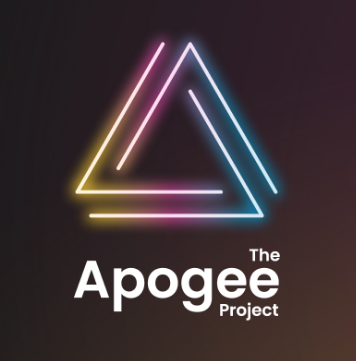
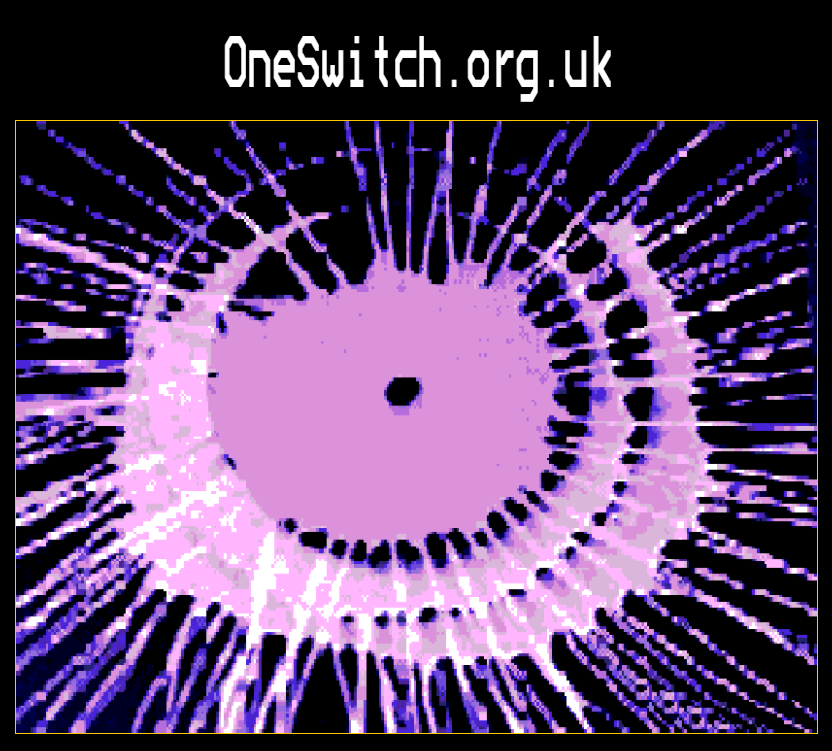
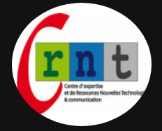

Activités et jeux
-
 LectureVisiter ↗
LectureVisiter ↗SENICT (Ian Bean)
-
MouvementVisiter ↗
Benny's Hub (Narbe Foundation)
-

LectureVisiter ↗
Apogee Project
Pédagogie
Actualités et blogs
-
BlogVisiter ↗
Sam's EAT lab
-

InspirationVisiter ↗
One Switch
- 
Maker / Materials
-
Community & Open Source
Makers Making Change
Makers Making Change offers a wide variety of projects and files to create your own assistive devices.
Visit ↗ -
Non‑profit / 3D Prints
Switched Adapted Toys
This project provides 3D printable plans and solutions to make or purchase your own adapted switches.
Visit ↗ -
DIY & Guides
Volksswitch
Volksswitch is a comprehensive example of a printable device to create your own access solutions.
Visit ↗